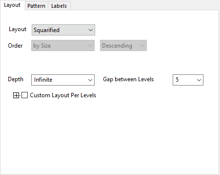
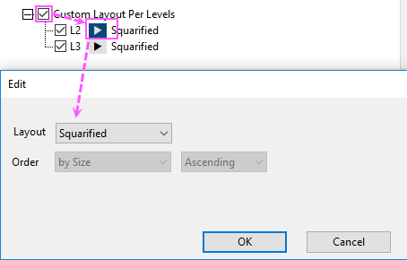

Registerkarte Layput für Treemap (Details Zeichnung)
PD-Layout-tab-Treemap
Diese Registerkarte wird verwendet, um die Layouteinstellungen für die Treemap vorzunehmen.

Layout
Es stehen 6 Layouts zur Verfügung, um die Knotenrechtecke für jede Stufe anzuordnen:
- Aufteilen: Ordnet die Rechtecke entsprechend dem Ordnungswert der Ebenen/Werte der X-Variablen an.
- Squarified: Ordnet alle Rechtecke in absteigender Reihenfolge basierend auf der Größenspalte (Zusammenfassungsstatistik) an. Diese Option platziert die größten Rechtecke oben links in der Zeichnung und die kleinsten unten rechts.
- Squarified+: Verbessertes Squarified, um ein besseres Seitenverhältnis abzubilden, ohne zu langsam zu werden. Diese Option ist grundlegend identisch mit Squarified, aber wenn eine Zeile entschieden ist, wird die aktuelle Zeilenrichtung mit der alternativen Zeilenrichtung verglichen. Wählen Sie die bessere Zeilenrichtung nach dem Vergleich des Seitenverhältnisses.
-
Pivot nach Größe/Mitte/Aufteilungsgröße: Der Algorithmus der „squarified“ Treemap erzeugt gute Seitenverhältnisse, ignoriert aber die Sortierreihenfolge der Rechtecke. Im Fall der geordneten Treemap berücksichtigt der Algorithmus Pivot nach Größe/Mitte/Aufteilungsgröße die Sortierreihenfolge, während die Seitenverhältnisse noch akzeptabel sind.
- Pivot nach Größe: Pivot ist das größte Element in der Liste. Das durchschnittliche Seitenverhältnis ist besser.
- Pivot nach Mitte: Pivot ist das mittlere Element der Liste. (Wenn die Liste n Elemente enthält, ist das Pivot das Element mit dem Index n/2). Dieser Algorithmust ist stabiler.
- Pivot nach Aufteilungsgröße: Das Pivot teilt die Liste in ungefähr gleiche Bereiche auf. Dieses Layout ist ausgeglichener.
Ordnung
Sie können wählen, wie Sie die Rechtecke anordnen möchten, Kategoriale Ordnung, Alphabetische Reihenfolge, Nach Größe oder Nach Spalte (legen Sie eine andere Datenspalte fest).
Die Layouts Squarified und Squarified+ unterstützen nur die Ordnung der Knoten nach Größe.
Tiefe
Legen Sie die Ebenen der Treemap fest, die gezeigt werden sollen. Tiefe = 1 bedeutet, dass nur die erste Ebene der Treemap gezeigt wird. Tiefe = N bedeutet, dass nur die ersten N Ebenen der Treemap gezeigt werden. Unbeschränkt bedeutet, dass alle Ebene der Treemap gezeigt werden.
Abstand zwischen Ebenen
Legen Sie den Abstand zwischen den Rechtecken fest.
Benutzerdefiniertes Layout pro Ebenen
Sie können diese Bedienelementgruppe aktivieren, um das Layout von verschiedenen Ebenen separat benutzerdefiniert anzupassen, mit Ausnahme von der ersten Ebene.

Die Bedienelemente Layout und Ordnung im geöffneten Dialog Bearbeiten sind die gleichen wie oben.